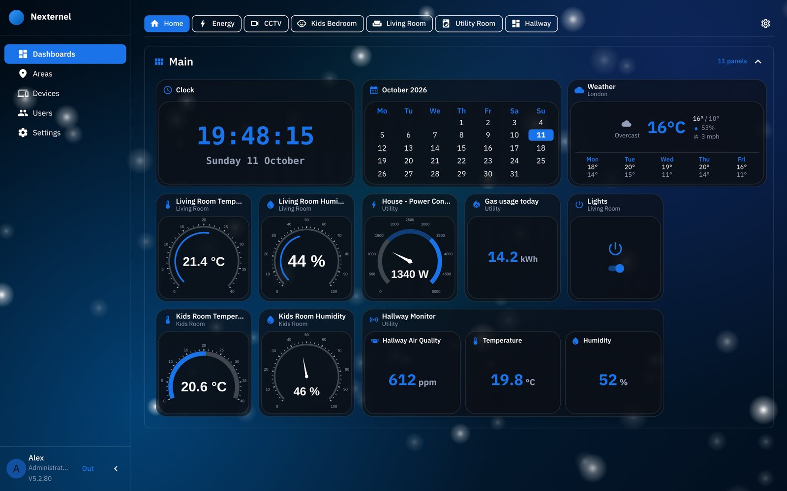
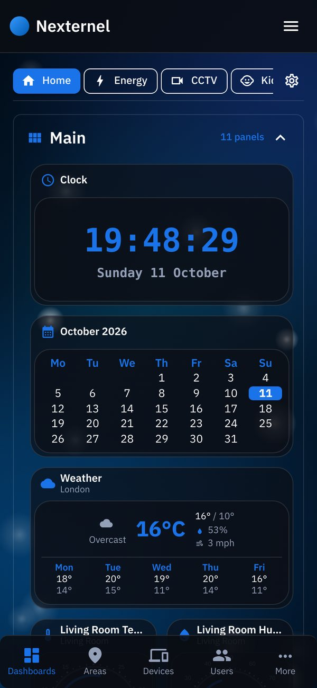

Nexternel brings your sensors, switches, cameras and energy readings together on dashboards you arrange yourself. It runs on a small Linux machine at home. There's no cloud account, and your data stays with you.
curl -fsSL https://www.reynsys.com/install.sh | bash
Run it on a 64-bit Ubuntu, Debian or Raspberry Pi OS machine, then open the address it shows.

Readings, switches, charts, gauges, cameras, weather, clock and calendar. The layout flows to fit a laptop, a phone or a wall tablet.
ESP32 boards with ESPHome, built and flashed from the browser. Shelly switches, Octopus Energy and live cameras.
Every reading is stored, so charts show the last hour, day or week at a glance.
An encrypted backup every day. Restore it on a new server and every device, dashboard and account comes back, and the devices reconnect by themselves.

It installs Docker if needed, sets up every service with its own random password, and starts Nexternel. This takes a few minutes the first time.
Choose Start fresh and create your account, or Restore from backup to bring over a home you already have.
Your devices find Nexternel by its address, so keep it fixed. The install guide shows how.